maf a thorough extension to emacs calc
Calc is exceptionally powerful and flexible, but can also feel clunky and archaic. maf streamlines Calc’s interactive model and adds substantial new features.
Commands are contextual.
Here’s the same key, W (square), with the cursor in two different places.
Square one expression. Cursor on the +, only the highlighted expression is squared.
Square both sides. Cursor on the =, both sides of the equation are squared.
maf can do a lot more. It introduces direct stack editing, embedded plots, persistent sessions, LaTeX previews, a calc-trail alternative, and more.
Major Features
A longer one: a parabola brought into standard form, then plotted. Collect the x terms, complete the square where point sits, move the stray constant across, simplify the other side, factor out its gcd, plot.
A shorter one: the hypotenuse of a right triangle with legs 3 and 4. The theorem comes from the formula library, the legs go in as an assignment, and the equation is solved.
The features, as they look
Captured in a live Emacs: each picture is the buffer as it stands after the keys named. The same buffer is under each one as fontified HTML.
The live highlight
y + 2, and the highlight follows point as it moves. html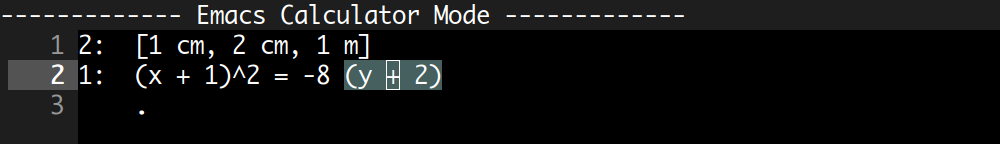
The equation target
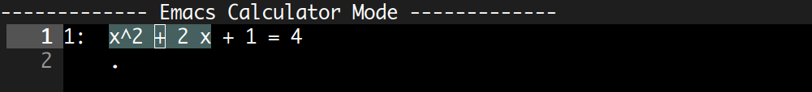
Selections, with a badge
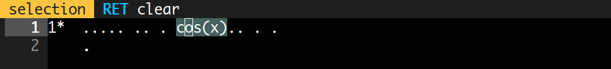
The stack as text
3xy^2 is three factors, {cm} quotes a name that must stay whole. html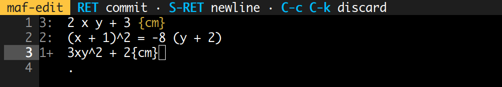
The preview panel
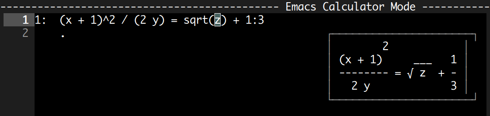
Paper-style output
exp(2 x) written e^(2 x), and 3^log(x, 3) collapsed to x. html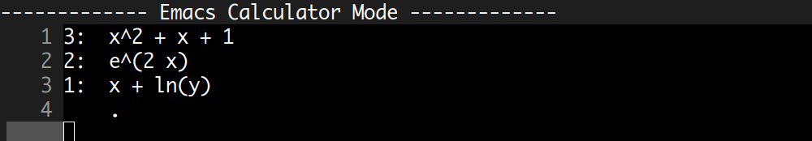
Plotting
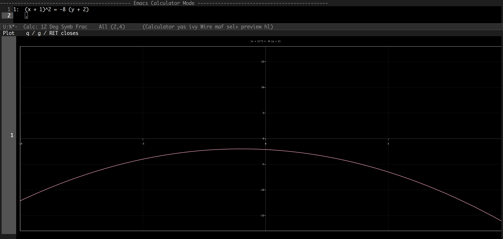
The formula library
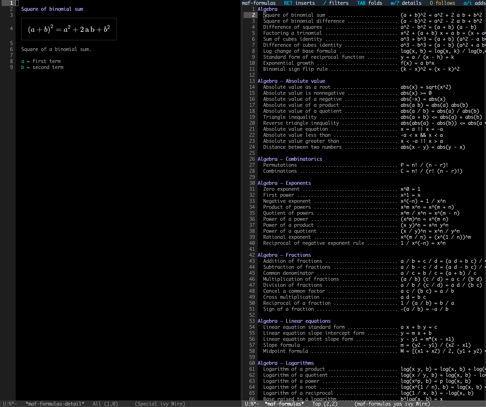
Stack history
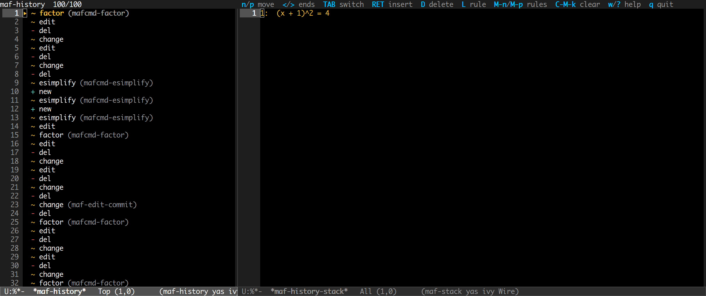
Bindings help
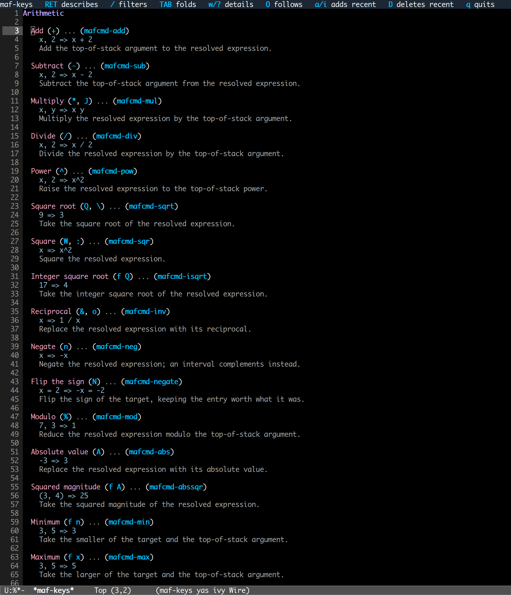
The options table
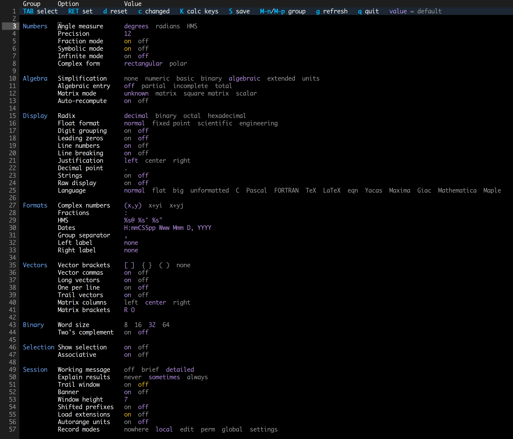
The module menu
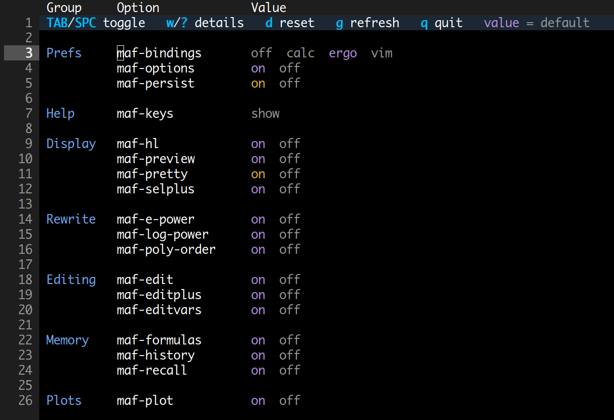
Saved stacks
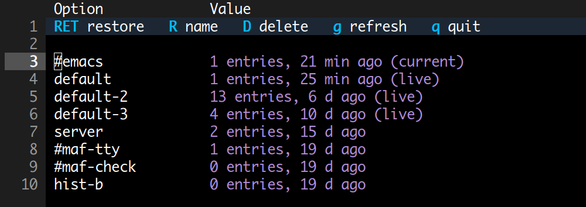